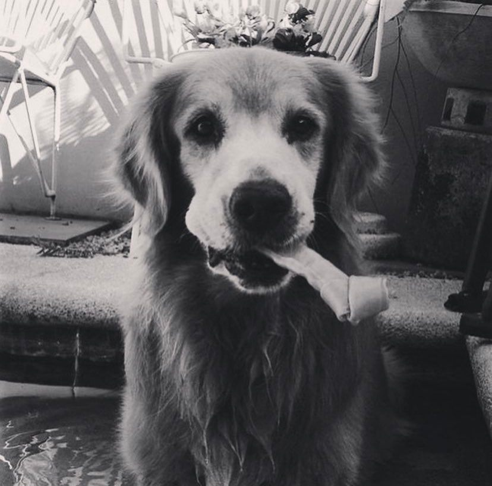

|
|
 | |
|
| Characteristics | Care | Diet |
|---|---|---|
Golden retrivers are very trustworthy and outgoing, they will do anything to please you, they are also energetic, and powerful and they have a puppyish behavior that they will bring until adulthood. |
Since they are very outgoing and energetic, you have to walk them and play with them a lot, so that they are able to stay in shape and healthy through out their long lives, and so that they aren't bored. |
Just like every other dog, golden retrivers are omnivores they are able to eat both meat and plants. Noteable meat and plants that I fed my golden retriver are beef, chicken, lamb and some on the plant side, pumpkin, pea, cooked potatoes, and broccoli. |